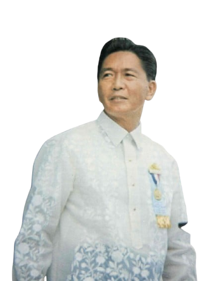
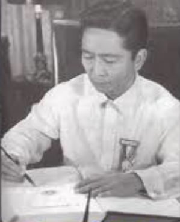
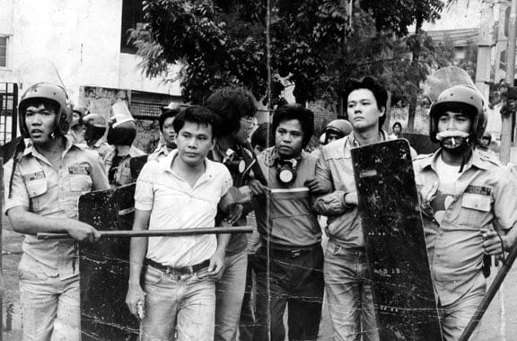
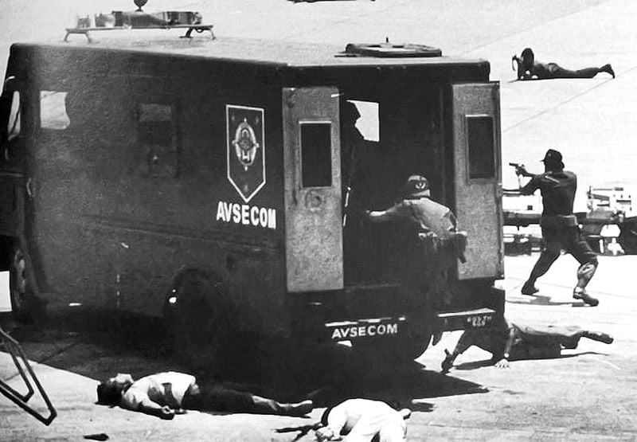
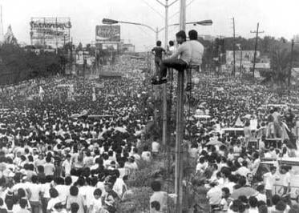
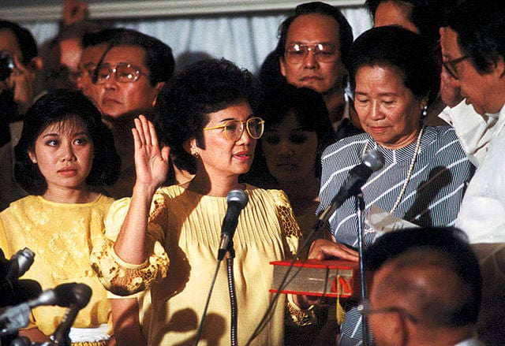
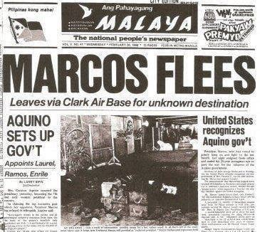

Political Overview
An examination of the political landscape during the Marcos era — from his rise to the presidency, the imposition of Martial Law, and the People Power Revolution that ended 21 years of authoritarian rule.
 Ferdinand Marcos Sr., 10th President of the Philippines
Ferdinand Marcos Sr., 10th President of the Philippines
Rise to Power

Ferdinand Marcos Sr.
Elected the 10th President of the Philippines in 1965, Marcos projected the image of a decisive, modernizing leader. In 1969, he became the first Philippine president in history to win a second term under the 1935 Constitution — a milestone he leveraged to claim a mandate for sweeping national transformation.
His early administration oversaw an ambitious infrastructure program, constructing roads, bridges, and public buildings across the archipelago. To his supporters, he was a builder-president. To his critics, the seeds of authoritarianism were already being planted.
Key Facts
- Elected president in 1965; re-elected in 1969
- First president re-elected under the 1935 Constitution
- Declared Martial Law on September 21, 1972 via Proclamation No. 1081
- Ruled for 21 years total — the longest of any Philippine president
- Fled to Hawaii on February 25, 1986 following the People Power Revolution
Political Tensions of the Early 1970s
By the late 1960s, the Philippines was experiencing deep social fractures. Student protest movements filled the streets of Manila. Labor unrest was mounting, and the Communist Party of the Philippines (CPP) and its armed wing, the New People's Army (NPA), were gaining strength in the countryside. In Mindanao, the Moro National Liberation Front (MNLF) was escalating its campaign for Muslim separatism in the south.

The political climate reached a boiling point in 1971, when hand grenades were thrown into a Liberal Party rally at Plaza Miranda in Manila, wounding scores of people. The incident — blamed on communist insurgents at the time, though its true orchestration remains debated by historians — accelerated calls for emergency rule.
Martial Law: Proclamation No. 1081
On September 21, 1972, Ferdinand Marcos signed Proclamation No. 1081, placing the entire Philippines under Martial Law. The announcement was broadcast to the public two days later, on September 23 — the date most Filipinos associate with the declaration.
Marcos justified the move as a necessary response to the communist insurgency and widespread civil disorder. In practice, Martial Law served as the legal instrument for a sweeping consolidation of power. Congress was dissolved, the free press was shuttered overnight, and civil liberties were suspended.

"The Philippines is in a state of rebellion." — Ferdinand Marcos Sr., justifying Proclamation No. 1081, September 21, 1972
Political opponents, journalists, activists, and opposition leaders were arrested and detained without trial. Among the most prominent detainees was Senator Benigno "Ninoy" Aquino Jr. Thousands of others — students, labor organizers, clergy — were imprisoned in military detention centers. Human rights organizations documented widespread accounts of torture and extrajudicial killings during this period.

Rule by Decree and the 1973 Constitution
With Congress dissolved, Marcos governed by presidential decree — bypassing the legislative process entirely. Over the course of his rule, he issued more than 1,900 presidential decrees, covering everything from economic policy to criminal law.
In 1973, a new constitution formally replaced the presidential system with a parliamentary one. In practice, Marcos retained almost all executive authority. The new framework allowed him to extend his rule indefinitely, effectively making him president-for-life.
Assassination of Benigno Aquino Jr. (1983)
After years of imprisonment and eventual exile, Senator Benigno Aquino Jr. returned to the Philippines on August 21, 1983, despite warnings that his life was in danger. He was shot dead on the tarmac of Manila International Airport moments after stepping off the plane.
The assassination galvanized the political opposition, inflamed public anger, and triggered a massive economic crisis. Yellow ribbons — Aquino's campaign color — became a symbol of resistance across the country. The political tide had turned irreversibly against Marcos.

The 1986 Snap Election and People Power Revolution
Facing mounting pressure, Marcos called a snap presidential election in early 1986 against Corazon "Cory" Aquino, widow of the assassinated senator. The election was marred by widespread fraud. What followed became one of the most remarkable peaceful revolutions of the 20th century — hundreds of thousands flooded EDSA, tanks were stopped by nuns kneeling in prayer, and on February 25, 1986, Marcos fled to Hawaii.



Political Timeline
Election to the Presidency
Marcos defeats Diosdado Macapagal to become the 10th President of the Philippines.
Re-election
Becomes the first Philippine president re-elected under the 1935 Constitution.
Plaza Miranda Bombing
Grenades thrown at a Liberal Party rally kill and injure dozens; political tensions escalate sharply.
Martial Law Declared
Proclamation No. 1081 signed. Congress dissolved, media shut down, mass arrests begin.
New Constitution Ratified
A parliamentary system replaces the presidential one, allowing Marcos to extend his rule indefinitely.
Assassination of Ninoy Aquino
Benigno Aquino Jr. shot dead at Manila International Airport upon returning from exile.
Snap Election & People Power Revolution
Amid allegations of fraud, mass protests along EDSA force Marcos to flee. Corazon Aquino inaugurated president.
Primary Source: The Martial Law Declaration
Original broadcast footage of Ferdinand Marcos Sr. announcing Proclamation No. 1081 on September 23, 1972 — the moment Martial Law was made public to the Filipino people.